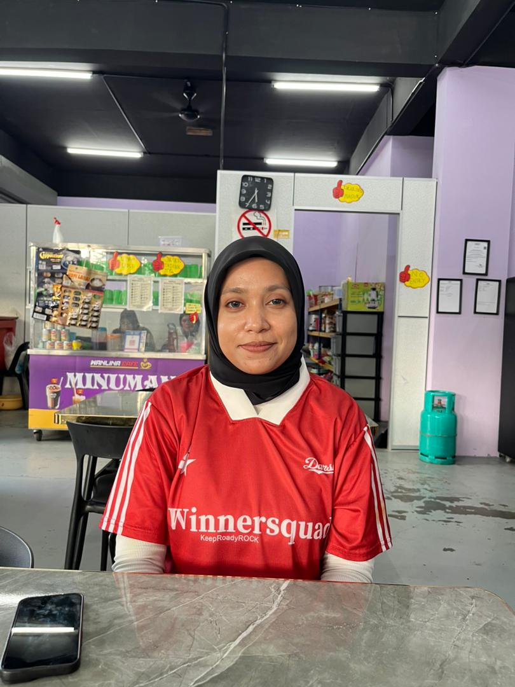
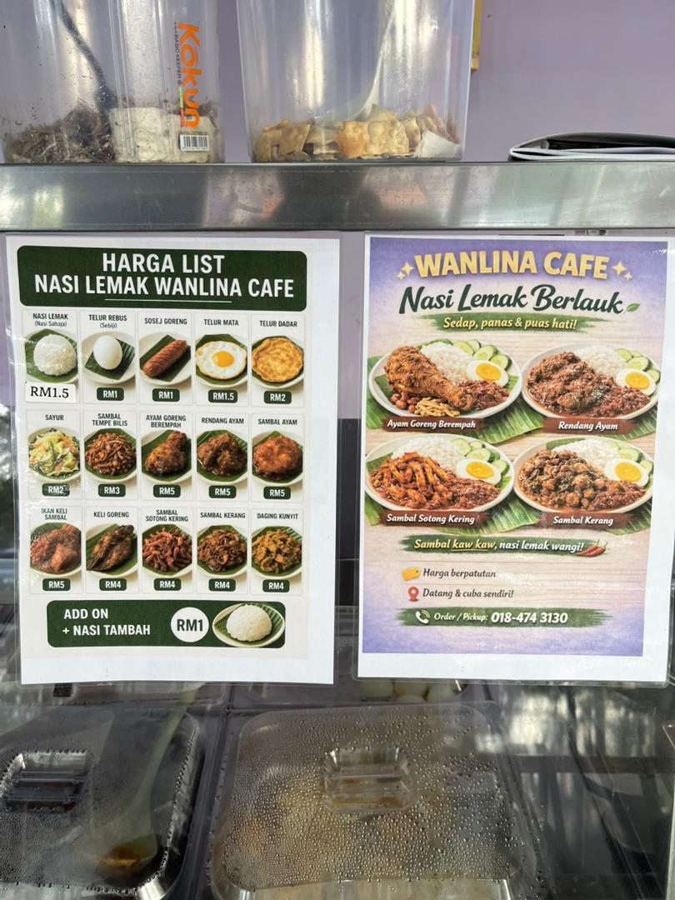
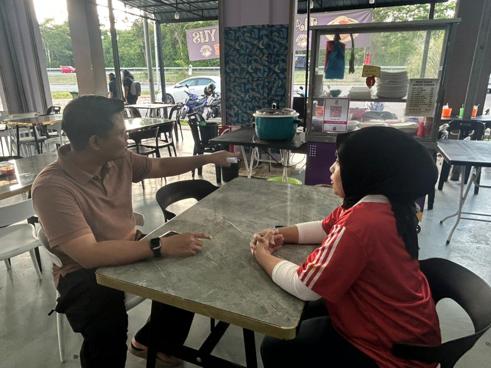

Im 'Nur Farhana, the Nasi Lemak vendor at Walina Cafe

The staff at Nasi Lemak Walina Cafe serve their signature Nasi Lemak Ayam Berempah, a dish that has become especially popular among students and lecturers at UniMAP. Known for its rich aroma and satisfying taste, the meal features fragrant coconut rice paired with crispy, well-seasoned spiced fried chicken that is both tender on the inside and crunchy on the outside. It is typically accompanied by traditional side dishes such as sambal, anchovies, peanuts, and boiled egg, creating a balanced combination of flavours. Due to its affordability, generous portion size, and consistent quality, this menu item has gained a strong reputation within the campus community. Many customers choose it not only for its taste but also for the comforting and familiar experience it offers, making it a go-to meal for breakfast, lunch, or even a quick dinner between classes.
We provide a wide variety of meals catered to both students and staff, ensuring there are options to suit different tastes and preferences. Our menu includes popular local dishes such as Chicken Rendang, known for its rich, creamy gravy infused with aromatic spices, as well as Ayam Masak Merah, a sweet and slightly spicy tomato-based chicken dish that is both flavourful and satisfying. For those who prefer beef, the Beef Masak Merah offers a similar bold taste with tender slices of meat cooked in a savoury sauce. In addition, we also serve Tempeh, a nutritious and protein-rich option that is especially appealing to those seeking a lighter or plant-based meal. Of course, our menu would not be complete without the classic Nasi Lemak, a staple Malaysian dish loved for its fragrant rice and variety of complementary side dishes. By offering this diverse selection, we aim to meet the daily dining needs of the campus community while maintaining quality, taste, and affordability.

Established in 2026, the café was founded with a clear focus on serving the needs of students, particularly those looking for affordable, convenient, and satisfying meals within a campus environment. From the very beginning, the business has aimed to create a welcoming space where students can enjoy local dishes while managing their busy academic schedules. Food preparation typically begins early in the morning to ensure that all menu items are fresh and ready before the first wave of customers arrives. This early preparation also helps maintain consistency in taste and quality throughout the day. However, like many food service operations, the café faces challenges during peak hours, especially during lunch breaks when the demand significantly increases. During these times, staff must work efficiently to manage long queues, maintain quick service, and ensure that food quality is not compromised, making time management and teamwork essential to daily operations.
